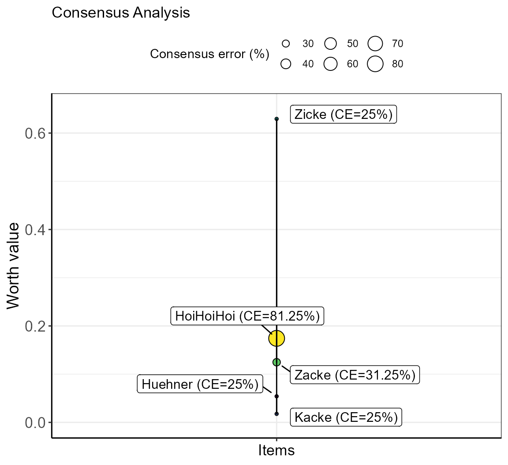

vignettes/simsalRbim_quality_measures.Rmd
simsalRbim_quality_measures.RmdWhen simulating scaled rankings with unknown values, it is important to estimate measures of fit. We provide two measures for doing this: the consensus error (CE) and the intransitivity ratio (Iratio).
The ‘consensus error’ (CE) indicates the percent of (dis)agreement in preference within a given item pairing between individuals. If all individuals agree on a given item, the CE is zero. If individuals disagree, there is no consensus. The range of disagreement is between one and half of the individuals who differ in their preference for a given set of two items. The bimeval function compares the preferences of each subject and calculates the mean consensus error. Because this can be a bit abstract, we provide an example below.
In our ZickeZacke dataset, four individuals have rated all items, except ‘HoiHoiHoi’, which was rated by only 3 individuals (“eins”, “zwei”, “vier”). Moreover, those individuals that have rated ‘HoiHoiHoi’ were not in total agreement whether or not ‘HoiHoiHoi’ was preferred in binary comparisons over other items. The amount of disagreement is termed consensus error, with a consensus error of 0% meaning all individuals agree on a position, and a consensus error of 100% means all individuals disagree. Let’s say, we want to assess the consensus error of the newly entered ‘HoiHoiHoi’ item in the ZickeZacke dataset. For this, we consider all item pairings that include ‘HoiHoiHoi’.
The table below provides the quantities (e.g., amount drunk) for items (options) A and B if available, and the result of the preference in relation to quantity A, i.e., 1 (preferred item A), 0 (tie), -1 (preferred item B). Item pairings that are not provided in the data are filled in as ties (note, that the quantities are zero in these cases, while those ties that already occurred in the original data still show quantities).
As an example, the combinations of “Kacke” with the “HoiHoiHoi” item are highlighted. Note that subjectID “drei” has no quantities and was therefore added as a tie.
#> Warning in bimeval(ydata = predat, worth = worth, GT = GT, simOpt = simOpt, : simsalRbim: No. of SUBJECTS WARNING!
#> The number of subjects you have provided for testing the
#> simOpt='HoiHoiHoi' item is probably insufficient!
#> Try increasing the number of subjects.
#> You are currently below 80% data coverage for
#> that item.
#> The consensus error may be biased!
#> Your provided-to-simulated subjects ratio is at: 75%.
#> Warning in bimeval(ydata = predat, worth = worth, GT = GT, simOpt = simOpt, : simsalRbim: No. of ITEMS WARNING!
#> The number of item tests you have provided for testing the
#> simOpt='HoiHoiHoi' item is probably insufficient!
#> Try increasing the number of item combinations.
#> You are currently below 80% item coverage for
#> that item.
#> The consensus error may be biased!
#> Your provided-to-simulated items ratio is at: 50%.| subjectID | optionA | optionB | quantityA | quantityB | test | result | tie |
|---|---|---|---|---|---|---|---|
| eins | Huehner | Kacke | 30 | 20 | HuehnerKacke | 1 | FALSE |
| zwei | Huehner | Kacke | 50 | 40 | HuehnerKacke | 1 | FALSE |
| drei | Huehner | Kacke | 55 | 26 | HuehnerKacke | 1 | FALSE |
| vier | Huehner | Kacke | 42 | 34 | HuehnerKacke | 1 | FALSE |
| eins | Huehner | Zicke | 5 | 50 | HuehnerZicke | -1 | FALSE |
| zwei | Huehner | Zicke | 10 | 77 | HuehnerZicke | -1 | FALSE |
| drei | Huehner | Zicke | 70 | 89 | HuehnerZicke | -1 | FALSE |
| vier | Huehner | Zicke | 44 | 88 | HuehnerZicke | -1 | FALSE |
| eins | Kacke | Zicke | 2 | 33 | KackeZicke | -1 | FALSE |
| zwei | Kacke | Zicke | 11 | 47 | KackeZicke | -1 | FALSE |
| drei | Kacke | Zicke | 5 | 36 | KackeZicke | -1 | FALSE |
| vier | Kacke | Zicke | 4 | 95 | KackeZicke | -1 | FALSE |
| eins | Huehner | Zacke | 33 | 45 | HuehnerZacke | -1 | FALSE |
| zwei | Huehner | Zacke | 23 | 32 | HuehnerZacke | -1 | FALSE |
| drei | Huehner | Zacke | 77 | 88 | HuehnerZacke | -1 | FALSE |
| vier | Huehner | Zacke | 21 | 34 | HuehnerZacke | -1 | FALSE |
| eins | Kacke | Zacke | 74 | 2 | KackeZacke | 1 | FALSE |
| zwei | Kacke | Zacke | 0 | 12 | KackeZacke | -1 | FALSE |
| drei | Kacke | Zacke | 3 | 45 | KackeZacke | -1 | FALSE |
| vier | Kacke | Zacke | 1 | 8 | KackeZacke | -1 | FALSE |
| eins | Zicke | Zacke | 50 | 40 | ZickeZacke | 1 | FALSE |
| zwei | Zicke | Zacke | 30 | 10 | ZickeZacke | 1 | FALSE |
| drei | Zicke | Zacke | 80 | 5 | ZickeZacke | 1 | FALSE |
| vier | Zicke | Zacke | 66 | 15 | ZickeZacke | 1 | FALSE |
| eins | Huehner | HoiHoiHoi | 0 | 0 | HuehnerHoiHoiHoi | 0 | TRUE |
| zwei | Huehner | HoiHoiHoi | 0 | 0 | HuehnerHoiHoiHoi | 0 | TRUE |
| drei | Huehner | HoiHoiHoi | 0 | 0 | HuehnerHoiHoiHoi | 0 | TRUE |
| vier | Huehner | HoiHoiHoi | 0 | 0 | HuehnerHoiHoiHoi | 0 | TRUE |
| eins | Kacke | HoiHoiHoi | 40 | 50 | KackeHoiHoiHoi | -1 | FALSE |
| zwei | Kacke | HoiHoiHoi | 10 | 30 | KackeHoiHoiHoi | -1 | FALSE |
| vier | Kacke | HoiHoiHoi | 66 | 66 | KackeHoiHoiHoi | 0 | TRUE |
| drei | Kacke | HoiHoiHoi | 0 | 0 | KackeHoiHoiHoi | 0 | TRUE |
| eins | Zicke | HoiHoiHoi | 0 | 0 | ZickeHoiHoiHoi | 0 | TRUE |
| zwei | Zicke | HoiHoiHoi | 0 | 0 | ZickeHoiHoiHoi | 0 | TRUE |
| drei | Zicke | HoiHoiHoi | 0 | 0 | ZickeHoiHoiHoi | 0 | TRUE |
| vier | Zicke | HoiHoiHoi | 0 | 0 | ZickeHoiHoiHoi | 0 | TRUE |
| eins | Zacke | HoiHoiHoi | 40 | 50 | ZackeHoiHoiHoi | -1 | FALSE |
| zwei | Zacke | HoiHoiHoi | 10 | 30 | ZackeHoiHoiHoi | -1 | FALSE |
| vier | Zacke | HoiHoiHoi | 66 | 15 | ZackeHoiHoiHoi | 1 | FALSE |
| drei | Zacke | HoiHoiHoi | 0 | 0 | ZackeHoiHoiHoi | 0 | TRUE |
For the next step in the CE calculation, the function counts how many cases of preference for A or B and how many ties were found. This number is multiplied with 1/No. of subjects.
In the example of the highlighted case above, this would be
No. A x 1/No. of subjects = 0 x 0.25 = 0
No. B x 1/No. of subjects = 2 x 0.25 = 0.5
To avoid distribution bias, ties are attributed equally to options A and B, e.g., in the data above there are 2 ties, so the calculation is:
(No. of A x 1/No. of subjects) + ((No. ties x 1/No. of subjects)/No. of ties = (0 x 0.25) + ((2x0.25)/2) = 0.25.
AND
(No. of B x 1/No. of subjects) + ((No. ties x 1/No. of subjects)/No. of ties) = (2 x 0.25) + ((2x0.25)/2) = 0.75.
This is repeated with all item combinations, resulting in the following table:
| test | n | no_of_ties | CE_A | CE_B |
|---|---|---|---|---|
| HuehnerKacke | 4 | 0 | 100.0 | 0.0 |
| HuehnerZicke | 4 | 0 | 0.0 | 100.0 |
| KackeZicke | 4 | 0 | 0.0 | 100.0 |
| HuehnerZacke | 4 | 0 | 0.0 | 100.0 |
| KackeZacke | 4 | 0 | 25.0 | 75.0 |
| ZickeZacke | 4 | 0 | 100.0 | 0.0 |
| HuehnerHoiHoiHoi | 4 | 4 | 50.0 | 50.0 |
| KackeHoiHoiHoi | 4 | 2 | 25.0 | 75.0 |
| ZickeHoiHoiHoi | 4 | 4 | 50.0 | 50.0 |
| ZackeHoiHoiHoi | 4 | 1 | 37.5 | 62.5 |
The ‘consensus error’ (CE) indicates the percent of (dis)agreement in preference within a given item pairing.
We set the threshold for deciding whether option A or B is preferred to 50% (default setting) and calculate the deviation of the smallest percentage from it (deviation = delta). (Note: the threshold can be changed in the bimpre functions using the function objects deviation and/or minQuantity).
The following pseudocode illustrates how the deviation delta was calculated.
# Pseudococde - deviation calculation
for(i in 1:item_combinations){ # e.g., ZackeHoiHoiHoi
if( item[i, "CE_A" ] > item[i, "CE_B" ] ){
delta[i] <- (50 - item[i, "CE_B" ])
}else{
delta[i] <- (50 - item[i, "CE_A" ])
}
CE_raw <- 50-delta
CE <- (50-delta)/50 * 100
}With the resulting delta value, the deviation from 50% can be calculated. A delta value of 50 means perfect consensus. Therefore: CE_raw(A,B) = 50 - delta.
This is the unstandardized Consensus Error.
The unstandardized error may be unintuitive. Therefore, it is standardized to percent range by: CE = (50-delta)/50 x 100
This is repeated with all items, resulting in the following detailed error table.
| item | n | no_of_ties | CE_A | CE_B | delta | CEraw | CE |
|---|---|---|---|---|---|---|---|
| HuehnerKacke | 4 | 0 | 100.0 | 0.0 | 50.0 | 0.0 | 0 |
| HuehnerZicke | 4 | 0 | 0.0 | 100.0 | 50.0 | 0.0 | 0 |
| KackeZicke | 4 | 0 | 0.0 | 100.0 | 50.0 | 0.0 | 0 |
| HuehnerZacke | 4 | 0 | 0.0 | 100.0 | 50.0 | 0.0 | 0 |
| KackeZacke | 4 | 0 | 25.0 | 75.0 | 25.0 | 25.0 | 50 |
| ZickeZacke | 4 | 0 | 100.0 | 0.0 | 50.0 | 0.0 | 0 |
| HuehnerHoiHoiHoi | 4 | 4 | 50.0 | 50.0 | 0.0 | 50.0 | 100 |
| KackeHoiHoiHoi | 4 | 2 | 25.0 | 75.0 | 25.0 | 25.0 | 50 |
| ZickeHoiHoiHoi | 4 | 4 | 50.0 | 50.0 | 0.0 | 50.0 | 100 |
| ZackeHoiHoiHoi | 4 | 1 | 37.5 | 62.5 | 12.5 | 37.5 | 75 |
The detailed error table is summarized for each item by reporting the average CE together with the worth value. The final error table is, therefore:
| item | n | worth | CE | label | |
|---|---|---|---|---|---|
| 2 | Huehner | 4 | 0.0540780 | 25.00 | Huehner (CE=25%) |
| 3 | Kacke | 4 | 0.0176131 | 25.00 | Kacke (CE=25%) |
| 4 | Zicke | 4 | 0.6293618 | 25.00 | Zicke (CE=25%) |
| 5 | Zacke | 4 | 0.1247277 | 31.25 | Zacke (CE=31.25%) |
| 1 | HoiHoiHoi | 4 | 0.1742194 | 81.25 | HoiHoiHoi (CE=81.25%) |
Finally, the total CE is calculated as the average of the averaged item CEs ( here: 5 items).
Total CE = (25 + 31.25 + 25 + 25 + 81.25) / 5 = 37.5%
The bimeval function plots this result as a bubble plot in which the CE determines the bubble sizes.
#> Warning in bimeval(ydata = predat, worth = worth, GT = GT, simOpt = simOpt, : simsalRbim: No. of SUBJECTS WARNING!
#> The number of subjects you have provided for testing the
#> simOpt='HoiHoiHoi' item is probably insufficient!
#> Try increasing the number of subjects.
#> You are currently below 80% data coverage for
#> that item.
#> The consensus error may be biased!
#> Your provided-to-simulated subjects ratio is at: 75%.
#> Warning in bimeval(ydata = predat, worth = worth, GT = GT, simOpt = simOpt, : simsalRbim: No. of ITEMS WARNING!
#> The number of item tests you have provided for testing the
#> simOpt='HoiHoiHoi' item is probably insufficient!
#> Try increasing the number of item combinations.
#> You are currently below 80% item coverage for
#> that item.
#> The consensus error may be biased!
#> Your provided-to-simulated items ratio is at: 50%.
The combination of multiple bimodal choices is usually based on the assumption of transitivity: If, in a comparison of three items (triplet), item A is preferred over B, and B is preferred over C, then A should also be preferred when directly compared to C. However, in real-life data, intransitive decisions occur on the individual aswell as on the group level. Therefore, the amount of intransitivity in the derived ranking can be used as a proxy for the quality of the ranking.
The transitivity is always checked for the whole data. The number of intransitive triplets is counted and standardized to the total number of triplets. For example:
Let’s say, there are 40 triplets in total and 3 triplets show intransitive patterns. Then, the intransitivity ratio would be Iratio = 3/40 = 0.075.
Introducing simulated items can lead to ties which might increase intransitivity. However, if the data are already confounded by intransitivity, the introduction of simulated items may reduce the overall amount of intransitivity by selecting for transitive combinations (informed simulation). Therefore, running the simulation longer will increase the chances of obtaining transitive pairs for new item combinations, which we select for in the informed simulation. Usually, the best choice for a new item will be the one with the highest achieved transitivity.
This method is used in the informed simulation of the bimsim function. The results are shown in bubbleplots with the transitivity ratio as size parameter.